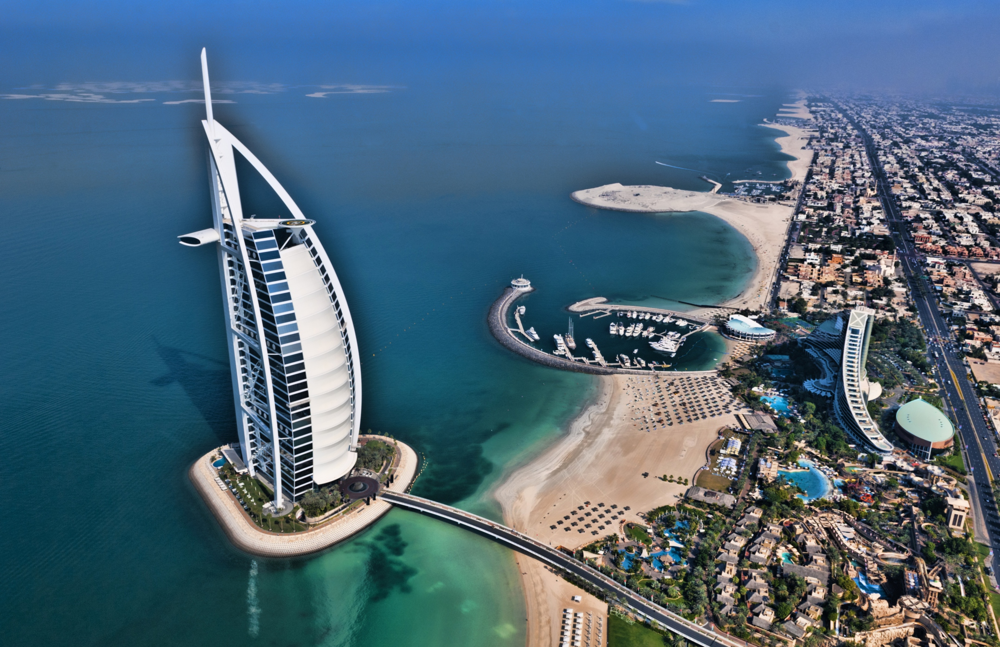
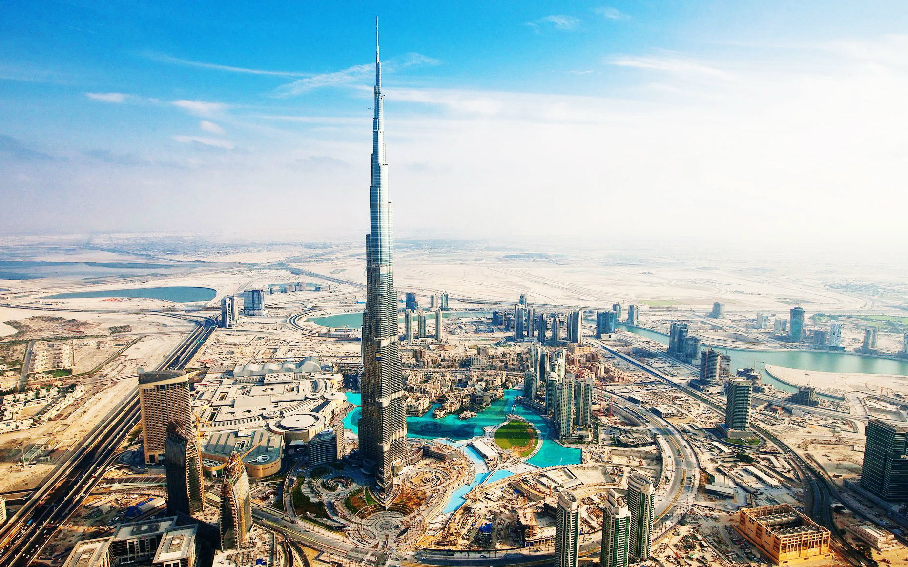
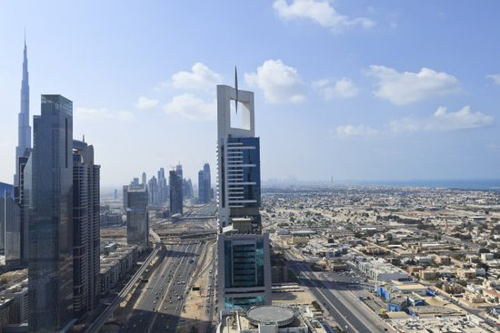
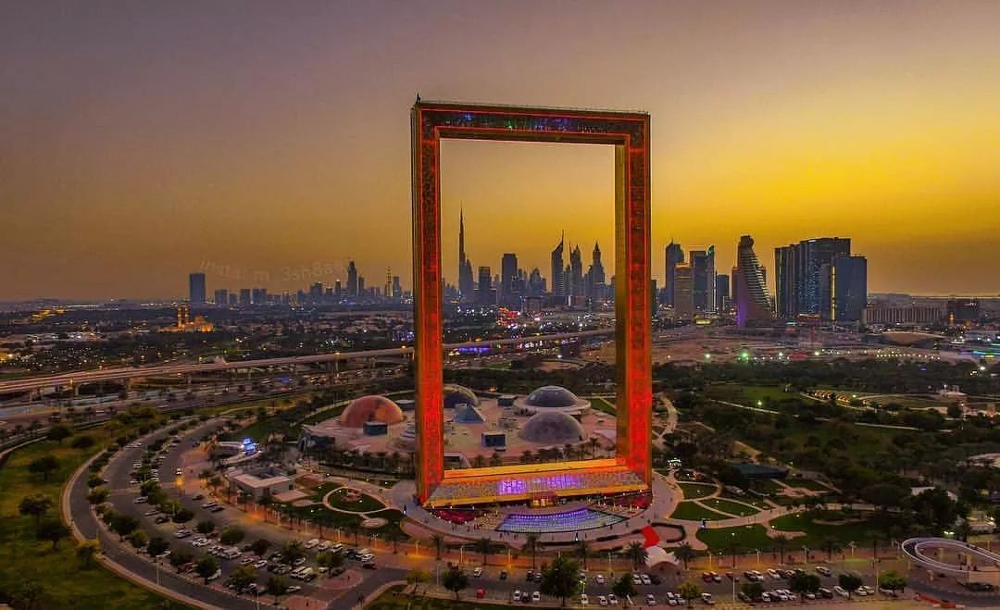
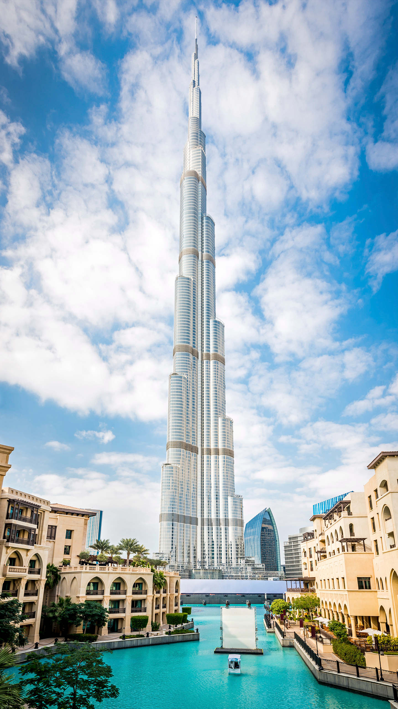
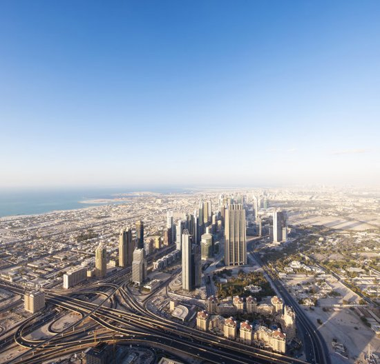
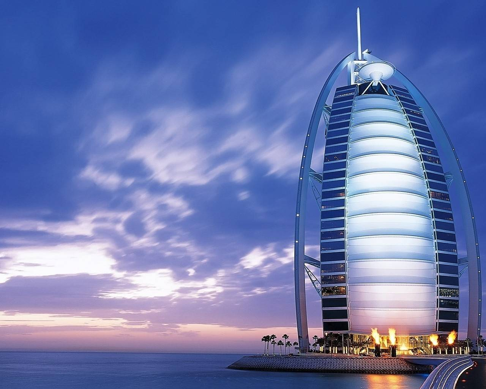
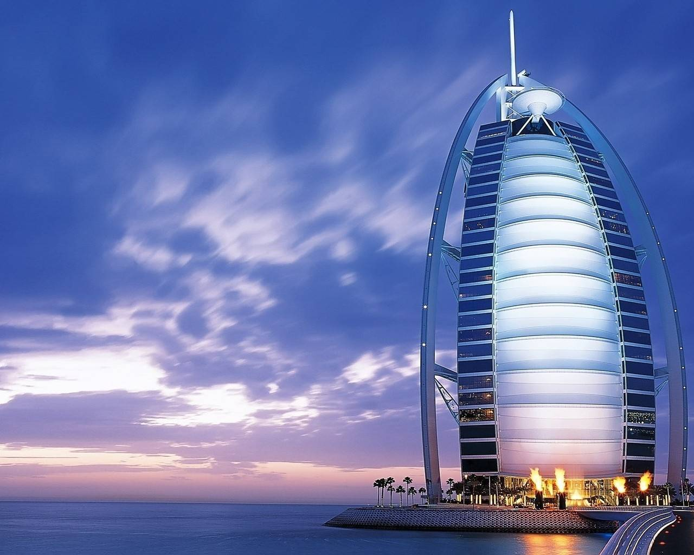

morly旅游网
一说迪拜，你肯定想到了外国习俗，穿衣风格和美丽的风景，还有帅气的豪车，想过去美丽的迪拜吗？
迪拜位于阿拉伯半岛中部、阿拉伯湾南岸，是海湾地区中心。与南亚次大陆隔海相望，与卡塔尔为邻、与沙特阿拉伯交界、与阿曼毗连。迪拜常住人口约280万人，本地人口占15%左右，外籍人士来自全球200多个国家和地区。
迪拜是全球性国际金融中心之一，成为了东、西方各资本市场之间的桥梁，同时也成为了重要的物流、贸易、交通运输、旅游和购物中心。
拥有世界上第一家七星级酒店(帆船酒店)、世界最高的摩天大楼(哈利法塔)、全球最大的购物中心、世界最大的室内滑雪场等，以活跃的房地产、赛事、会谈等近乎世界纪录的特色吸引了全世界的目光。2020年世界博览会将在此举办。
哈利法塔
哈利法塔(Khalifa Tower，阿拉伯语: برج خليفه ，"Burj Khalifa")原名迪 拜塔(Dubai Tower)，又称迪拜大厦或比斯迪拜塔，是位于阿联酋迪拜的一栋已经建成的摩天大楼，有162层，总高828米，比台北101足足高出320米。
 地球群岛
被称为世界第八大奇迹的迪拜地球群岛，又名世界群岛，位于迪拜海岸线上，在迪拜闻名遐迩的珠美拉棕榈岛和德拉棕榈岛之间，总共由300个岛屿构成，勾勒出一幅世界地图的形状。
 沙漠风情
在迪拜旅游的诸多节目中，去黄金沙漠冲沙，可以算最能体验阿拉伯风情的迪拜旅游项目了。驱车数小时，远离繁华喧嚣的迪拜城，让您体验一个不一样的迪拜，切身感受阿拉伯文化的魅力，而多种不同类型的活动，让你从惊险刺激到休闲舒适，再到疯狂迷醉。
 赛马
由于迪拜统治者喜爱赛马，这项活动在迪拜很受欢迎。迈单赛马场是专为举行世界上最昂贵的赛马活动--迪拜世界杯而建。
 

酋长国中42.3%的人口为印度人，17%为阿联酋公民，13.3%为巴基斯坦人，7.5%为孟加拉国人，9.1%为阿拉伯人，10.8%为其他种族。
根据迪拜统计中心所进行的人口调查，截至2006年，迪拜酋长国的人口总数为142万2000人，包括107万3000名男性和34万9000名女性，截至1998年，总人口中土生土长的阿联酋人仅占17%。迪拜的人口结构与其它阿联酋的酋长国不同的在于它的外籍人士比例相当大，主要来自于南亚与东南亚。
内容整理至网络，如有侵权，请联系我们！1255394075@qq.com